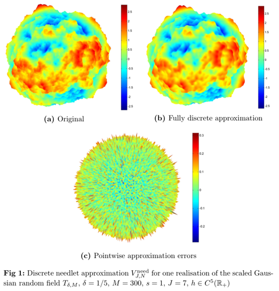
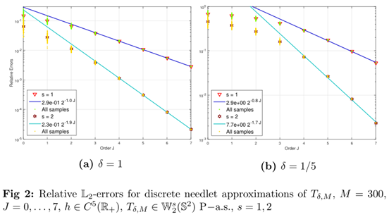

In this paper we establish a multiscale approximation for spherical random fields using spherical needlets — a class of spherical wavelets. We prove that the semidiscrete needlet decomposition converges in mean and pointwise senses for weakly isotropic random field of all orders on \(\mathbb{S}^{d}\subset\mathbb{R}^{d+1}\), \(d\ge2\). For numerical implementation, we construct a fully discrete needlet approximation for a smooth two-weakly isotropic random field on \(\mathbb{S}^{d}\) and prove that the error order of the approximation by fully discrete needlets has the same order to that for semidiscrete needlets. Numerical examples are carried out for fully discrete needlet approximations of Gaussian random fields.
|  |  |